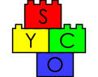
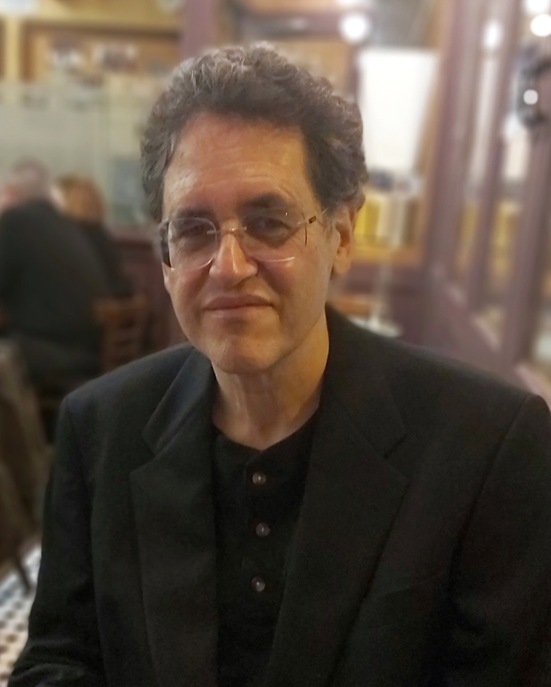
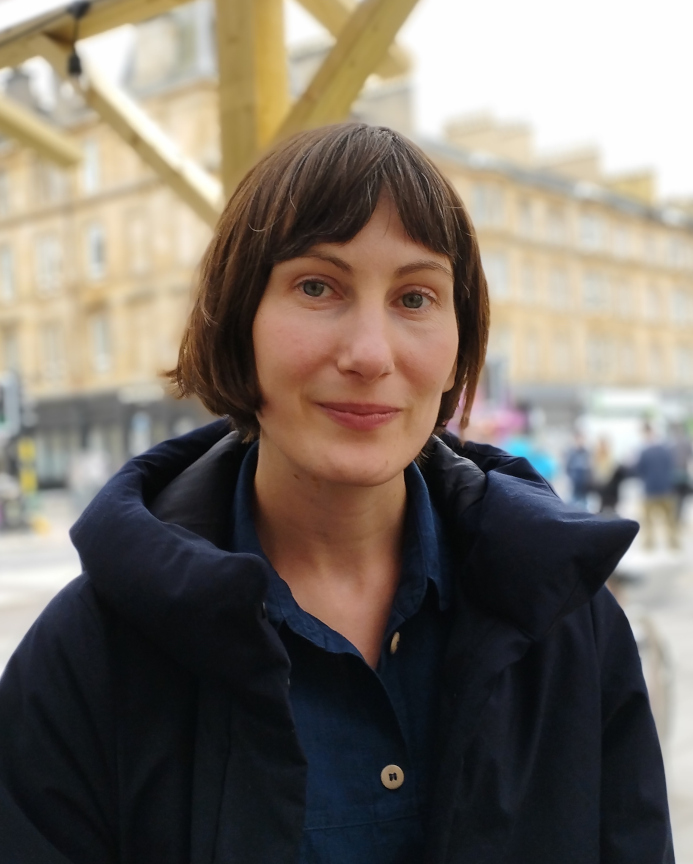

|  |
Tenth Symposium on Compositional Structures (SYCO 10)Edinburgh, UK |
The Symposium on Compositional Structures is a series of interdisciplinary meetings aiming to support the growing community of researchers interested in the phenomenon of compositionality, from both applied and abstract perspectives, and in particular where category theory serves as a unifying common language. We welcome submissions from researchers across computer science, mathematics, physics, philosophy, and beyond, with the aim of fostering friendly discussion, disseminating new ideas, and spreading knowledge between fields. Submission is encouraged for both mature research and work in progress, and by both established academics and junior researchers, including students.
Submission is easy, with no format requirements or page restrictions. The meeting does not have proceedings, so work can be submitted even if it has been submitted or published elsewhere. You could submit work-in-progress, or a recently completed paper, or even a PhD or Masters thesis.
While no list of topics could be exhaustive, SYCO welcomes submissions with a compositional focus related to any of the following areas, in particular from the perspective of category theory:
- logical methods in computer science, including classical and quantum programming, type theory, concurrency, natural language processing and machine learning;
- graphical calculi, including string diagrams, Petri nets and reaction networks;
- languages and frameworks, including process algebras, proof nets, type theory and game semantics;
- abstract algebra and pure category theory, including monoidal category theory, higher category theory, operads, polygraphs, and relationships to homotopy theory;
- quantum algebra, including quantum computation and representation theory;
- tools and techniques, including rewriting, formal proofs and proof assistants, and game theory;
- industrial applications, including case studies and real-world problem descriptions.
This new series aims to bring together the communities behind many previous successful events which have taken place over the last decade, including Categories, Logic and Physics, Categories, Logic and Physics (Scotland), Higher-Dimensional Rewriting and Applications, String Diagrams in Computational, Logic and Physics, Applied Category Theory, Simons Workshop on Compositionality, the Yorkshire and Midlands Category Theory Seminar and the Peripatetic Seminar in Sheaves and Logic.
This event follows SYCO 1 in Birmingham, SYCO 2 in Strathclyde, SYCO 3 in Oxford, SYCO 4 in California, SYCO 5 in Birmingham, SYCO 6 in Leicester, SYCO 8 in Tallinn, and SYCO 9 in Como.
Invited speakers
|  |  |
| John Baez | Emily Roff |
| University of California, Riverside | University of Edinburgh |
| Title: Compositional Modeling with Decorated Cospans | Title: What are higher-order roles in social systems? |
Important dates
All deadlines are 23:59 anywhere-on-earth on the given dates.
Submission deadline: 7 November 2022Author notification: 20 November 2022Registration: 11 December 2022- Symposium dates: Monday 19 and Tuesday 20 December 2022
In-person and online participation
Speakers are expected to present their contribution in person. Submissions must point out who will present the contribution if it is selected.
Though in-person attendance is encouraged, it will be possible to follow all presentations online. Registered online participants will be contacted by e-mail, closer to the meeting date, with the virtual coordinates.
Accepted papers
- Clémence Chanavat: Cubical Type Theory Inside a Presheaf Topos
- Jade Edenstar Master, Benjamin Merlin Bumpus, Zoltan A. Kocsis: Structured Decompositions: Structural and Algorithmic Compositionality
- Jade Edenstar Master: How to Compose Shortest Paths
- Tobias Fritz, Tomáš Gonda, Nicholas Gauguin Houghton-Larsen, Paolo Perrone, Dario Stein: Dilations and information flow axioms in categorical probability
- Bruno Gavranović, Mattia Villani: Graph Neural Networks as Parametric CoKleisli morphisms
- Makoto Hamana: Complete Algebraic Semantics for Second-Order Rewriting Systems based on Abstract Syntax with Variable Binding
- Peter Hines: On coherence for Stoic conjunction
- Satoshi Kura: On the Relationship Between Weakest Precondition Transformers and CPS Transformations
- Louis Lemonnier, Vladimir Zamdzhiev, Titouan Carette: Central Submonads and Notions of Computation
- Leo Lobski: Quantum quirks, classical contexts: Towards a Bohrification of effect algebras
- Edward Morehouse: Locally Cubical Gray-Categories
- Giti Omidvar, Lutz Strassburger: The Composition of Combinatorial Flows
- Eric Finster, Alex Rice, Jamie Vicary: A Type Theory for Strictly Associative Infinity Categories
- Richard Statman: Cayley Monoids
- Calin Tataru: A layout algorithm for higher-dimensional string diagrams
- Pieter W. Claeys, Marius Henry, Jamie Vicary, Austen Lamacraft: Exact dynamics in dual-unitary quantum circuits with projective measurements
- Vincent Wang: Foam, data structures, and games
- Carlos Zapata-Carratala: What is n-ary associativity? A Proposal of Higher-Arity Categories
Schedule
Hover over a talk to see the abstract.
| Monday 19 December | Tuesday 20 December |
|---|---|
| 9:45–10:15 REGISTRATION | 9:45–10:45 Invited talk John Baez: Compositional Modeling with Decorated Cospans Decorated cospans are a general framework for working with open systems with the help of double categories. We explain this framework and illustrate it with the example of stock-flow diagrams. These diagrams are widely used in epidemiology to model the dynamics of populations. Although tools already exist for building these diagrams and simulating the models they describe, we have created a software package called StockFlow which uses decorated cospans to overcome some limitations of existing software. Our approach enables the composition of stock-flow diagrams, and cleanly separates their syntax from the semantics they can be assigned. We have implemented three forms of semantics, including one where stock-flow diagrams are mapped to ordinary differential equations. We have also created a web-based graphical user interface for StockFlow that requires no knowledge of category theory or programming to use. This is joint work with Xiaoyan Li, Sophie Libkind, Nathaniel Osgood, Evan Patterson, Long Pham and Eric Redekopp. |
10:15-11:15 Invited talk Emily Roff: What are higher-order roles in social systems? Since at least the 1970s, social scientists have been using graphs to model social systems. A typical model is a collection of simple graphs sharing the same set of vertices: the vertices represent individual actors in the system, and each graph a distinct relation among them. The collection of graphs, taken together, is referred to as a multi-relational network. There are various well established methods of extracting information about the structure of a social system from such a model. For instance, to study the ‘social roles’ present in a system, one studies the semigroup generated under composition of relations. This procedure is known as role analysis. Often, however, graphs—which record only pairwise connections between actors—are not sufficient to describe a system faithfully. Increasingly researchers prefer to make use of hypergraphs or simplicial complexes, which can incorporate ties of higher dimension. The question arises: what is a ‘social role’ in such a system? The effort to lift role analysis fom graphs to higher-dimensional models requires us to consider what it means to ‘compose’ two hypergraphs and leads us, somewhat unexpectedly, into the realm of universal coalgebra. This is work in progress, joint with Daniel Cicala, Rachel Hardeman Morrill, Abby Hickok, Nikola Milećević, Nima Motamed and Nina Otter. |
|
| 10:45–11:15 BREAK | |
| 11:15–11:45 BREAK | Computationy things (chair: Robin Kaarsgaard) |
| Category-y things (chair: Chris Heunen) | 11:15–11:40 Clémence Chanavat: Cubical Type Theory Inside a Presheaf Topos The need for a cubical type theory, rather than, say, a simplicial one, comes from the lack of computational content the latter provides. In cubical settings, we can compute the univalence axiom. However, the drawback comes from the syntax of the cubical type theory which tends to be technical. From the semantic point of view, there is not one good category of cubes, there are a lot of variations, each of them with specific features. Our main goal is to focus on one specific cube category and to prove that it is indeed a model of this specific cubical type theory. To do this we rely on the work of Orton and Pitts who showed how the data of a topos, a interval object and a class of cofibrations satisfying a list of nine axioms suffices to model cubical type theory, providing a nice and clean axiomatic framework. However, in this new setting, new challenges appear. We need to answer the question of what it means for an axiom to be true in a topos. Classical work from McLane and Moerdijk or Lambek and Scott showed how it is possible to compute the internal logic of a topos using the notion of Kripke-Joyal semantics and forcing. Still, this approach does not take into account the modern needs of type theory, like proof relevance. Thus, Awodey, Gambino, and Hazratpour proposed a new version of Kripke-Joyal semantics. Their setting is a particular case of a topos, namely a presheaf category. There, they interpret Martin-Lof type theory thanks to the notion of category with families and extend the notion of forcing to this more general case. Hence, we apply their results to the case of the presheaf category over the category of cubes, and show that Kripke-Joyal forcing helps us to check the validity of the nine axioms. Our work gives a new perspective on the work of Orton and Pitts by using the recent tools of Awodey, Gambino, and Hazratpour to check the internal validity of the axioms. This provides a more systematic approach that could be generalized to various presheaf toposes. |
11:45-12:10 Carlos Zapata-Carratala: What is n-ary associativity? At the core of many basic categorical structures is the notion of a binary morphism mapping a source (collection of objects, inputs, entries...) to a target (collection of objects, outputs, outcomes...). In this talk I consider morphisms of generic arity and present an axiomatic definition of higher-arity category based on hypergraph rewrite systems generalizing the usual binary composition of morphisms. This will be done via the unifying 'Principle of Hypergraph Simplicity', that will allow to regard many structures (semicategories, daggers, categorical products, operads...) as slight variations of hypergraph rewrite systems. Our discussion will be motivated by the investigation of certain higher-order matrix alegebras that generalize relational algebras and tensor networks. In particular, the definition of higher-arity category will be directly inspired by the example of a heapoid, a kind of (partial) ternary algebra satisfying a generalized version of associativity recently found by the author in the context of ternary matrix algebra. This research fits into the larger project of Arity Science, a project lead by the author that seeks to develop mathematical formalisms that are well-adapted to describe higher-order compositional phenomena across formal and natural sciences. |
11:40-12:05 Louis Lemonnier: Central Submonads and Notions of Computation The notion of "centre" has been introduced for many algebraic structures in mathematics. A notable example is the centre of a monoid which always determines a commutative submonoid. Monads (in category theory) can be seen as generalisations of monoids and in this paper we show how the notion of centre may be extended to strong monads acting on symmetric monoidal categories. We show that the centre of a strong monad $\mathcal T$, if it exists, determines a commutative submonad $\mathcal Z$ of $\mathcal T$, such Kleisli category of $\mathcal T$. We provide three equivalent conditions which characterise the existence of the centre of $\mathcal T$. While not every strong monad admits a centre, we show that every strong monad on well-known naturally occurring categories does admit a centre, thereby showing that this new notion is ubiquitous. We also provide a computational interpretation of our ideas which consists in giving a refinement of Moggi's monadic metalanguage. The added benefit is that this allows us to immediately establish a large class of contextually equivalent terms for monads that admit a non-trivial centre by simply looking at the richer syntactic structure provided by the refinement. |
12:10-12:35 Alex Rice: A Type Theory for Strictly Associative Infinity Categories Many definitions of weak and strict infinity-categories have been proposed. In this talk we present a definition for infinity-categories with strict associators, but which is otherwise fully weak. Our approach is based on the existing type theory Catt, whose models are known to correspond to weak infinity-categories. We add a definitional equality relation to this theory which identifies terms with the same associativity structure, yielding a new type theory Cattsa, for strictly associative infinity-categories. We also provide a reduction relation which generates definitional equality, and show it is confluent and terminating, giving an algorithm for deciding equality of terms, and making typechecking decidable. Our key contribution, on which our reduction is based, is an operation on terms which we call insertion. This has a direct geometrical interpretation, allowing a subterm to be inserted into the head of the term, flatting its syntactic structure. We describe this operation combinatorially in terms of pasting diagrams, and also show can be characterized as a pushout of contexts. This allows reasoning about insertion using just its universal property. |
12:05-12:30 Satoshi Kura: On the relationship between weakest precondition transformers and CPS transformations Weakest precondition transformers are essential notions for program verification, and various extensions have been studied. However, only a few consider both higher-order languages and syntactic calculation of weakest precondition transformers. In this paper, we consider weakest precondition transformers for a higher-order functional language with computational effects and recursions and show that we can calculate them via a CPS transformation. We prove this in a general framework of categorical semantics. Because of this generality, two existing methods for program verification can be understood as instances of our result. |
12:35-13:00 Edward Morehouse: Locally Cubical Gray-Categories We present locally cubical Gray-categories, the cubical analogue of classical, locally globular, Gray-categories. In the same way that Gray-categories present the structure of 2-dimensional globular categories (2-categories or bicategories) together with their hierarchy of morphisms (functors, transformations, and modifications), locally cubical Gray-categories present the structure of 2-dimensional cubical categories (strict or weak double categories) together with their hierarchy of morphisms. In the globular case, 2-categories may have transformations of several possible variances, but in only one dimension. In contrast, double categories have transformations in two independent dimensions, reflecting the two types of morphisms within double categories themselves. In locally cubical Gray-categories this gives rise to four distinct types of interchanger, which we can think of as vertical-vertical, vertical-horizontal, horizontal-vertical, and horizontal-horizontal, where we have a choice of variance in each dimension independently. The homogeneous interchangers behave like the globular interchangers of classical Gray-categories, while the heterogeneous ones give rise to non-globular natural squares. This determines a family of 3-dimensional structures, which are cubical in two dimensions and globular in the third. An algebraic presentation of locally cubical Gray-categories by generators and relations is rather complex. One reason for this is the infelicity of encoding an inherently 3-dimensional theory using a 1-dimensional notation. Fortunately, the geometric intuition behind the algebra is simple and compelling. By using a 3-dimensional language we are able to represent and reason about terms of locally cubical Gray-categories in a natural and intuitive manner. |
12:30-13:30 LUNCH |
| 13:00-14:00 LUNCH | |
| Quantumy and Probability-y things (chair: Jules Hedges) | |
| Algorithmy things (chair: Ross Duncan) | 13:30–13:55 Jamie Vicary: Exact dynamics in dual-unitary quantum circuits with projective measurements Dual-unitary circuits have emerged as a minimal model for chaotic quantum many-body dynamics in which the dynamics of correlations and entanglement remains tractable. Simultaneously, there has been intense interest in the effect of measurements on the dynamics of quantum information in many-body systems. In this work we introduce a class of models combining dual-unitary circuits with particular projective measurements that allow the exact computation of dynamical correlations of local observables, entanglement growth, and steady-state entanglement. We identify a symmetry preventing a measurement-induced phase transition and present exact results for the intermediate critical purification phase. |
14:00–14:25 Jade Edenstar Master: Structured Decompositions We introduce structured decompositions: category-theoretic generalizations of many combinatorial invariants -- including tree-width, layered tree-width, co-tree-width and graph decomposition width -- which have played a central role in the study of structural and algorithmic compositionality in both graph theory and parameterized complexity. Structured decompositions allow us to generalize combinatorial invariants to new settings (for example decompositions of matroids) in which they describe algorithmically useful structural compositionality. As an application of our theory we prove an algorithmic meta theorem for the Sub_P-composition problem which, when instantiated in the category of graphs, yields compositional algorithms for NP-hard problems such as: Maximum Bipartite Subgraph, Maximum Planar Subgraph and Longest Path. |
13:55-14:20 Leo Lobski: Quantum quirks, classical contexts Two results of the following general form are proved: a functor from a category of algebras to the category of posets is essentially injective on objects above a certain size. The first result is for Boolean algebras and the functor taking each Boolean algebra to its poset of finite subalgebras. This strengthens and provides a novel proof for a result by Sachs, Filippov and Grätzer, Koh & Makkai. The second result is for finite MV-algebras and the functor taking each such algebra to its poset of partitions of unity. The second result uses the dual equivalence of finite MV-algebras with finite multisets, as well as the correspondence between partition posets of finite multisets and setoid quotients. Thus the equivalence is constructed via the powerset functor for multisets, and setoid quotients are introduced. The equivalence is a special case of a more general duality proved by Cignoli, Dubuc and Mundici. The primary interest of this work lies in algebras describing quantum observables, hence both results are viewed as statements about effect algebras. Since MV-algebras contain "unsharp" (i.e. self-orthogonal) elements, the second result shows that sharpness is not a necessary condition for essential injectivity of the partitions of unity functor. Physically, this means that there are systems with unsharp effects (namely, those represented by finite MV-algebras) which can be faithfully reconstructed from all the possible measurements. |
14:25-14:50 Jade Edenstar Master: How to Compose Shortest Paths The composition problem for shortest paths asks the following: given shortest paths on weighted graphs M and N which share a common boundary, find the shortest paths on their union. This problem is a crucial step in any algorithm which uses the divide and conquer method to find shortest paths. This extended abstract details how this problem may be understood categorically. Finding shortest paths is represented by a functor and the composition problem asks to find the value of this functor on a pushout using the values of the functor on the components. Furthermore, we present an algorithm which solves the composition problem for shortest paths. When implemented in Python, this algorithm reduces the computation time for finding shortest paths by relying on precompilation. |
14:20-14:45 Tomáš Gonda: Dilations and information flow axioms in categorical probability We study the positivity and causality axioms for Markov categories as properties of dilations and information flow in Markov categories, and in variations thereof for arbitrary semicartesian monoidal categories. These help us show that being a positive Markov category is merely an additional property of a symmetric monoidal category (rather than extra structure). We also characterize the positivity of representable Markov categories and prove that causality implies positivity, but not conversely. Finally, we note that positivity fails for quasi-Borel spaces and interpret this failure as a privacy property of probabilistic name generation. |
14:50-15:15 Bruno Gavranović: Graph Neural Networks as Parametric CoKleisli morphisms We define the bicategory of Graph Convolutional Neural Networks $\mathbf{GCNN}_n$ for an arbitrary graph with $n$ nodes. We show it can be factored through the already existing categorical constructions for deep learning $\mathbf{Para}$ and $\mathbf{Lens}$, on a different base category - that of the CoKleisli category of the product comonad. We prove that there exists a injective-on-objects, faithful 2-functor $\mathbf{GCNN}_n \to \mathbf{Para}_{\odot}(\mathsf{CoKl}(\mathbb{R}^{n \times n} \times -))$. We show that this construction allows us to treat the adjacency matrix of a GCNN as a parameter; a global parameter, instead of a a locally, layer-wise parameter. This gives us a high-level categorical characterisation of a particular kind of inductive bias GCNNs posses. Lastly, we hypothesize about possible generalisations of GCNNs to general message-passing graph neural networks, connections to equivariant learning, and the (lack of) functoriality of activation functions. |
14:45-15:15 BREAK |
| 15:15–15:45 BREAK | Diagramy things (chair: Ed Morehouse) |
| Logicy things (chair: Jamie Vicary) | 15:15-15:40 Vincent Wang: Foam, data structures, and games One purpose of this paper is to exhibit the use of beta.homotopy.io as a proof assistant and string- diagram-generation tool, now that the export to tikz function works. The other purpose of this paper - just to have a goal to move towards - is to justify the following statement: The free monoidal category on one object equipped with a frobenius algebra is a category of open two-player games with choice-multiplicity. |
15:45-16:10 Richard Statman: Cayley Monoids Everyone is familiar with Cayley's regular representation of groups in the symmetric group. And, if you think about monoids at all, you noted that it applies in a limited way to monoids. The notion of a Cayley monoid is just an internalization of this type of representation. There are many examples of Cayley monoids. Some of these are obtained from the group of a monoid acting on the monoid itself. There are some interesting special cases of Cayley monoids with strong <_{L} commutativity properties . An example is provided by the monoid Z*Q where Q is the quaternion group. In these cases we say that the Cayley monoid has an autonomous commutator. Here will will show that every monoid can be extended to a Cayley monoid with an autonomous commutator. |
15:40-16:05 Calin Tataru: A layout algorithm for higher-dimensional string diagrams Homotopy.io is a proof assistant implementing the theory of associative $n$-categories (ANCs), which provides a strictly associative model of higher categories. This work describes an algorithm for computing the layout of homotopy.io diagrams in arbitrary dimensions. This has several applications within the tool. Most notably, it allows for rendering 4D diagrams as smooth movies of 3D diagrams. |
16:10-16:35 Peter Hines: On coherence for Stoic conjunction This talk details a somewhat whimsical quest to give algebraic/categorical models of ancient Greek logic : precisely, the Stoic treatment of conjunction as expounded by Chrysippus, and understood (possibly misunderstood) by Hipparchus. Although the combinatorics of Hipparchus' calculations is now well-understood, the logical interpretation is less so. Suzanne Bobzien makes a convincing case that his calculations were based on underlying conceptual errors; as part of this, propositions that should have been identified were instead counted separately. In particular, propositions arising via different (partial or total) bracketings of the same elementary propositions were considered as distinct. This is nevertheless familiar from modern categorical logic; we are often forced to use `identical up to unique natural isomorphism' instead of some strict notion of equality. A fun question (albeit with no historical justification whatsoever) is to consider what kinds of mathematical models would be required if the propositions that Bobzien claims as incorrectly counted separately were indeed related in this way? We give a system that does precisely this. The result is `freely generated' in the operadic sense, \& may be used to label arbitrary facets of Stasheff's associahedra with functors corresponding to partial or total bracketings. We also exhibit natural transformations between them that live in a posetal category, and are therefore unique. This gives a range of diagrams, based on Associahedra, guaranteed to commute (including, of course, MacLane's pentagon as a very special case). The components of these natural transformations are the `congruential functions' of John Conway; we point out several natural combinatorial/number-theoretic topics that may therefore be interpreted as questions of coherence. |
16:05-16:30 Giti Omidvar: The Composition of Combinatorial Flows We introduce combinatorial flows as a graphical representation of proofs. They can be seen as a generalization of atomic flows on one side and of combinatorial proofs on the other side. From atomic flows, introduced by Guglielmi and Gundersen, they inherit the close correspondence with deep inference and the possibility of tracing the occurrences of atoms in a derivation. From combinatorial proofs, introduced by Hughes, they inherit the correctness criterion that allows reconstruction of the derivation from the flow. In fact, combinatorial flows form a proof system in the sense of Cook and Reckhow. We show how to translate between deep inference derivations and combinatorial flows. Moreover, we present the normalization steps for combinatorial flows. We also talk about the termination of these rewriting steps. |
16:35-17:00 Makoto Hamana: Complete Algebraic Semantics for Second-Order Rewriting Systems based on Abstract Syntax with Variable Binding By using algebraic structures in a presheaf category over finite sets by Fiore, Plotkin and Turi, we develop sound and complete models of second-order rewriting systems called second-order computation systems. Restricting the algebraic structures to those equipped with well-founded relations, we obtain complete characterisation of terminating computation systems. We also extend the characterisation to rewriting on meta-terms using the notion of Sigma-monoids. |
16:30 END |
Registration
Registration for in-person attendance is closed. To participate remotely, please register here if you would like to attend. There is no registration fee.
Limited financial support is available to help people attend the meeting in person, especially those from underrepresented groups; please enquire with the organisers.
Local information
The symposium will be held in the Informatics Forum; the talk in G.07, and the breaks in the Atrium:
The conference dinner, for those who registered for it, will be at Howies on Waterloo Place, at 8.30pm on Monday evening.
Edinburgh is Scotland's capital city, renowned for its heritage, culture, and festivals. Next to the World Heritage Site that is its historic centre, it is the home of many mathematical achievements, world-class universities, and the backdrop to several famous movies. Easy access to beautiful Scotland makes Edinburgh the second most popular tourist destination in the UK.
{kind=link}
Getting to Edinburgh is easy, through its international airport and two major railway stations. Most of the centre is easy to navigate on foot, and for longer distances you can get around by bus (carry exact fare), tram, taxi, uber, or bicycle.
Here is a useful list of accommodation providers with locations close to the conference venue, that you can book yourself.
Lunches and tea breaks are catered. For dinner, here is a map with some suggestions close to the conference venue, but there are many more, in Old Town, New Town, Newington, Bruntsfield, or the West End, all within walking distance of the conference venue:
Sponsorship


Deferral
The intention is for SYCO to be a community meeting, where people have enough time to explain their ideas, and with a friendly and non-competitive atmosphere. To encourage this, in the event that more submissions are received of an acceptable standard than can be accommodated in the timetable, the programme committee may choose to defer some submissions to a future meeting, rather than reject them. This would be done based largely on submission order, giving an incentive for early submission, but would also take into account other requirements, such as ensuring a broad and inclusive scientific programme. The perceived strength of the submission as judged by the reviewers is not taken into account for a deferral decision, so a deferral is not in any sense a rejection. Deferred submissions can then be re-submitted to any future SYCO meeting, where they will be prioritised for inclusion in the programme, and where they will not need to be re-reviewed. Meetings are held sufficiently frequently to avoid a backlog of deferred papers.
Submissions
Submissions are by OpenReview, via the SYCO 10 submission page.
Submissions should present research results in sufficient detail to allow them to be properly considered by members of the programme committee, who will assess their interest to the SYCO community. We encourage the submission of work in progress, as well as mature results. There are no proceedings, so work can be submitted even if it has been previously published, or has been submitted for consideration elsewhere. There is no specific formatting requirement, and no page limit, although for long submissions authors should be aware that reviewers will not be able to read the entire document in detail. Think creatively—you could submit a recent paper, draft notes of a project in progress, or even a recent Masters or PhD thesis. Speakers are expected to present their contribution in person, and submissions must point out who will present the contribution if it is selected.
If you have a submission which was deferred from a previous SYCO meeting, it will not automatically be considered for this event; if you would like to present it, you must submit it again through EasyChair. Such a submission will be prioritised for inclusion in the scientific programme. When submitting, append the words "DEFERRED FROM SYCO X" to the title of your paper, replacing "X" with the appropriate meeting number. There is no need to attach any documents.
Participants
Participants, in person or online, include:
- Malin Altenmuller, University of Strathclyde
- Brad Ashley, University of Sheffield
- John C. Baez, University of California, Riverside
- Ruben van Belle, University of Edinburgh
- Harsh Beohar, University of Sheffield
- Robert Booth, University of Edinburgh
- Dylan Braithwaite, University of Strathclyde
- Simon Burton, Quantinuum
- Alexander Corner, Sheffield Hallam University
- Alexander Cowtan, University of Oxford
- Niamh Cuffe, Cambridge University
- Matthew Di Meglio, University of Edinburgh
- Ross Duncan, Quantinuum
- Balazs Frei, Imperial College
- Markus Frembs, Griffith University
- Robert Furber, University of Edinburgh
- Clémence Chanavat, IRIF
- Bruno Gavranovic, University of Strathclyde
- Tomáš Gonda, University of Innsbruck
- Makoto Hamana, Gunma University
- Sascha Haupt, University of Hamburg
- Jules Hedges, University of Strathclyde
- Lukas Heidemann, University of Oxford
- Chris Heunen, University of Edinburgh
- Peter Hines, University of York
- Calum Hughes, University of Manchester
- Robin Kaarsgaard, University of Edinburgh
- George Kaye, University of Birmingham / Huawei Research & Development
- Akash Kumar Singh, Indian Institute of Science Education and Research, Tirupati
- Mateusz Kupper, Quantinuum
- Satoshi Kura, National Institute of Informatics
- Louis Lemonnier, LMF - University Paris-Saclay
- Leo Lobski, University College London
- Ioannis Markakis, University of Cambridge
- Jade Master, University of Strathclyde
- Orestis Melkonian, University of Edinburgh
- Edward Morehouse, Tallinn University of Technology
- Nima Motamed, Utrecht University
- Andrew Neate, University of Sheffield
- Wilf Offord, St. John's College, Oxford
- Giti Omidvar, Inria Saclay
- Simona Paoli, University of Aberdeen
- Martin Plávala, Universität Siegen
- Andrew Pitts, University of Cambridge
- Gordon Plotkin, University of Edinburgh
- Aberdeen Powell, University of East Anglia
- H Hrisheekesh Prabhakar, Poornaprajna Institute of Scientific Research
- Alex Rice, University of Cambridge
- Emily Roff, University of Edinburgh
- Riu Rodríguez Sakamoto, University of Strathclyde
- Chiara Sarti, University of Cambridge
- Julin Shaji, IITPKD
- Areeb Shah Mohammed, Universität Innsbruck
- Nesta van der Schaaf, University of Edinburgh
- Zev Shirazi, University of Oxford
- Sam Speight, University of Oxford
- Richard Statman, Carnegie Mellon University
- Malthe Sporring, University of Edinburgh
- Calin Tataru, University of Cambridge
- Jamie Vicary, University of Cambridge
- Alejandro Villoria, Universiteit Leiden
- Phil Wadler, University of Edinburgh
- Joshua Wrigley, Università degli Studi dell'Insubria
- Zhixuan Yang, Imperial College London
- Carlos Zapata, SEMF / Wolfram Institute
Local organizers
- Chris Heunen, University of Edinburgh
Programme committee
- Robin Cockett, University of Calgary
- Carmen Constantin, University of Edinburgh
- Ross Duncan, University of Strathclyde
- Chris Heunen, University of Edinburgh
- Robin Kaarsgaard, University of Edinburgh (chair)
- Marie Kerjean, Université Paris 13
- Aleks Kissinger, University of Oxford
- Dan Marsden, University of Nottingham
- Jade Master, University of Strathclyde
- Samuel Mimram, École Polytechnique
- Jean-Simon Pacaud Lemay, Kyoto University
- Simona Paoli, University of Aberdeen
- Mathys Rennela, INRIA Paris
- Mehrnoosh Sadrzadeh, University College London
- Pawel Sobocinski, Tallinn University of Technology
- Tarmo Uustalu, Reykjavik University
- Niccolò Veltri, Tallinn University of Technology
- Jamie Vicary, University of Cambridge
- Maaike Zwart, IT University of Copenhagen
Steering committee
The symposium is managed by the following people. If you have a general question about SYCO, or if you want to propose to host a future iteration, please get in touch with a member of the steering committee.- Ross Duncan, University of Strathclyde
- Chris Heunen, University of Edinburgh
- Dominic Horsman, University of Grenoble
- Aleks Kissinger, University of Oxford
- Samuel Mimram, École Polytechnique
- Simona Paoli, University of Aberdeen
- Mehrnoosh Sadrzadeh, University College London
- Pawel Sobocinski, Tallinn University of Technology
- Jamie Vicary, University of Cambridge